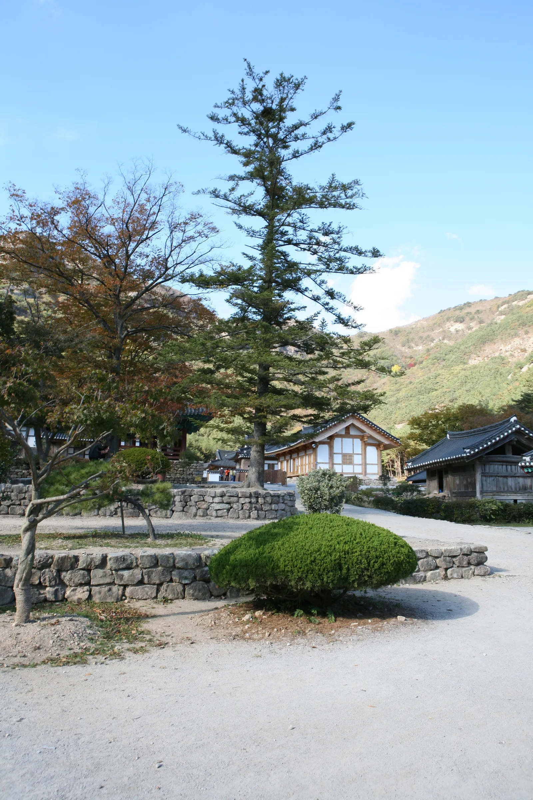
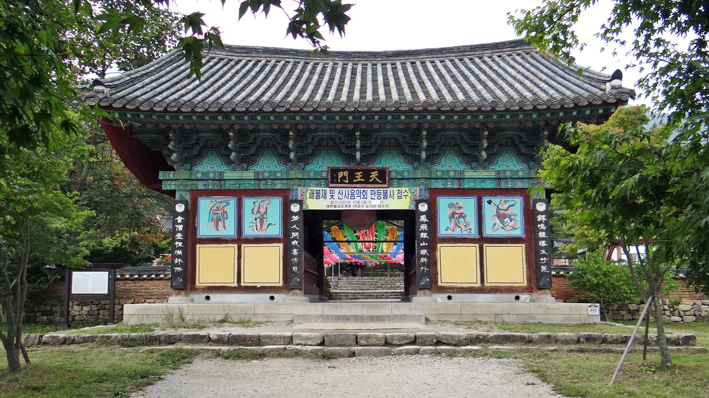
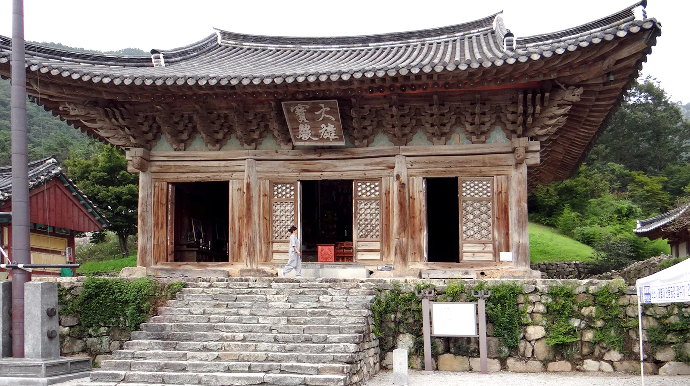
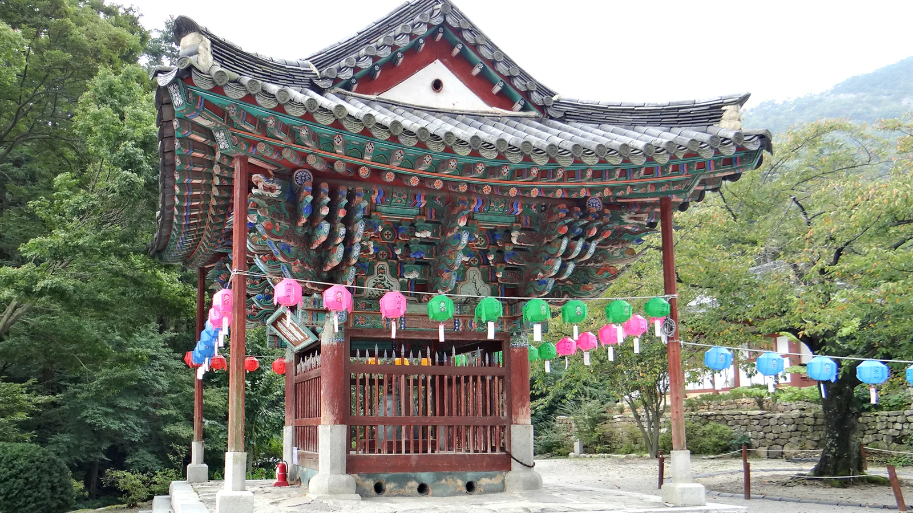
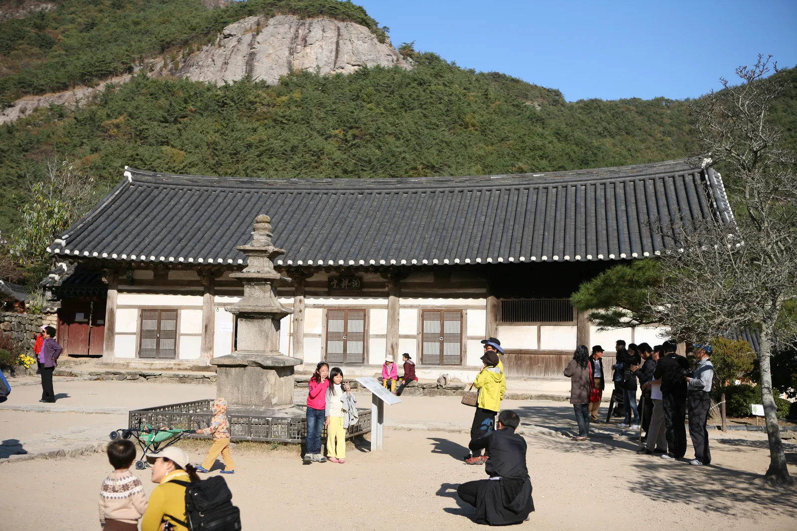
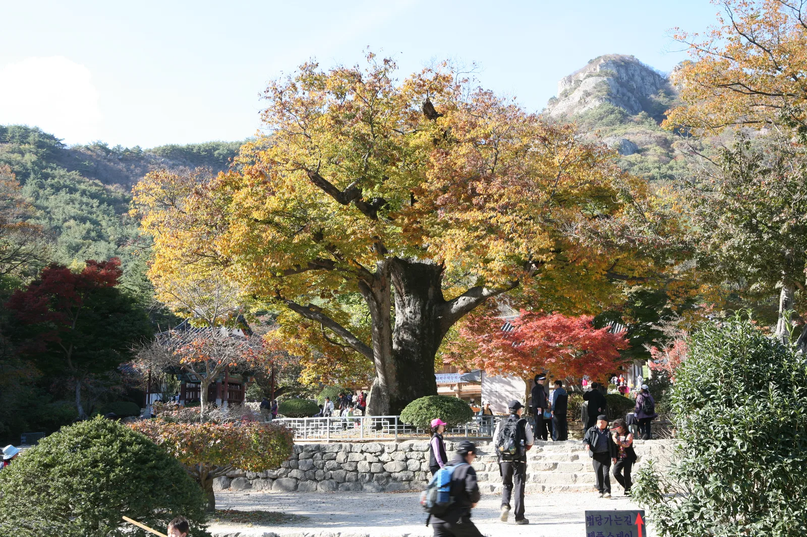
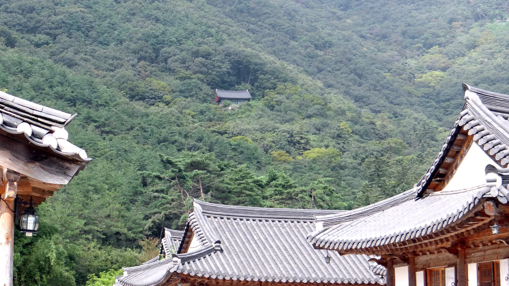
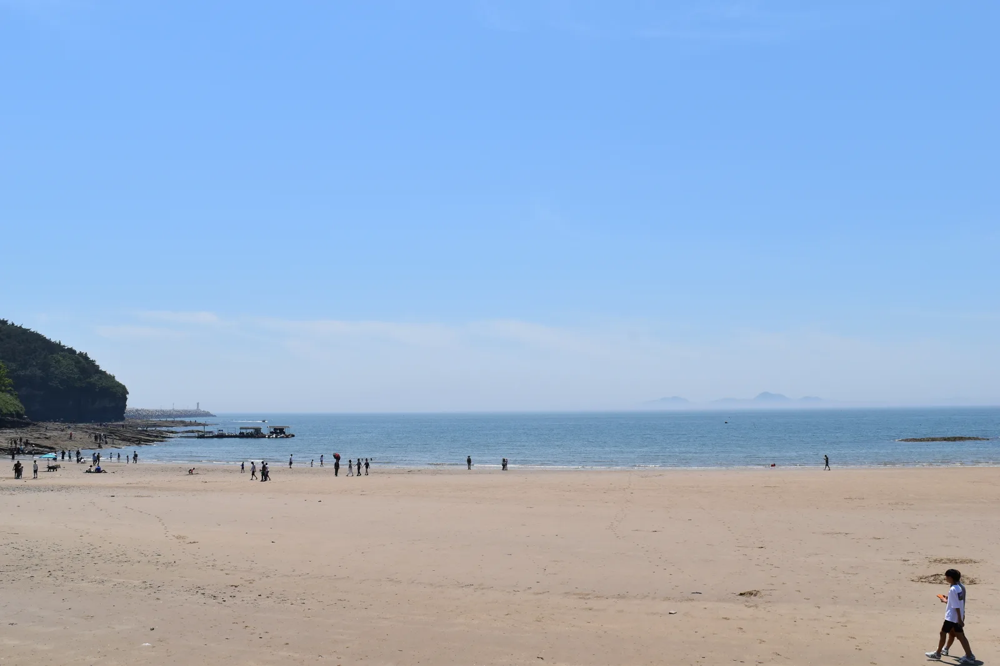

▲ 일주문에서 천왕문까지 이어지는 600m 전나무숲길. '아름다운 길 100선'에 선정된 구간이다
전북 부안군 진서면, 변산반도 자락에 자리한 내소사(來蘇寺)는 오랫동안 '전나무숲길이 예쁜 절'로만 소개돼 왔다. 틀린 말은 아니다. 일주문에서 천왕문까지 600m 남짓 이어지는 전나무숲길은 '아름다운 길 100선'에 뽑힐 만큼 유명하다. 문제는 여기서 발길을 돌리는 방문객이 많다는 점이다. 숲길 끝에는 쇠못 하나 쓰지 않고 지었다는 보물 대웅보전, 국보로 승격된 고려시대 동종, 1000년 묵은 느티나무가 기다리고 있다. 2023년 5월 4일부터는 입장료까지 사라졌으니 안 볼 이유가 없다. 이 기사는 창건 내력부터 문화재, 입장료·주차, 변산반도국립공원 연계 드라이브 코스까지 방문 순서대로 정리했다.
1. 633년 백제 고찰 — 소래사에서 내소사로
내소사는 633년(백제 무왕 34년) 혜구두타(惠丘頭陀) 스님이 창건한 절로, 처음 이름은 소래사(蘇來寺)였다. 한창 번성할 때는 규모가 큰 대소래사와 작은 소소래사 두 절이 함께 있었으나 대소래사는 불타 없어지고, 지금의 내소사는 소소래사가 이어져 온 것으로 전해진다. 지금의 이름인 내소사로 바뀐 유래에 대해서는 여러 설이 전해진다. 가장 널리 알려진 이야기는 당나라 장수 소정방이 이 절을 찾아 군중재(軍中財)를 시주하면서 이를 기념해 이름을 고쳤다는 것이다. 다만 소정방은 백제 부흥군 토벌 무렵 실제로는 당나라에 머물고 있었다는 기록이 있어 신빙성이 낮다는 지적도 있다. 불교에서 '이곳에 오는 모든 이가 다시 태어난다'는 뜻의 내자개소(來者皆蘇)에서 이름을 따왔다는 해석도 있으며, 이름이 바뀐 시기는 임진왜란 이후로 추정될 뿐 정확한 기록은 남아 있지 않다. 정사로 확정된 이야기라기보다 절에 전해 내려오는 설화에 가깝지만, 그만큼 오랜 세월 지역과 얽힌 절이라는 뜻이기도 하다. 능가산(관음봉) 자락에 안겨 있어 산문에 들어서는 순간부터 산세와 절이 겹쳐 보이는 것도 내소사의 특징이다.
2. 전나무숲길 — '아름다운 길 100선'의 600m

▲ 전나무숲길을 지나면 나오는 경내 초입 마당. 여기서부터 천왕문과 대웅보전이 이어진다 ⓒ Wikimedia Commons
내소사 전나무숲길은 일주문에서 천왕문까지 약 600m 구간을 가리킨다. 수십 년에서 백 년 가까이 자란 전나무가 길 양옆으로 빽빽하게 늘어서 있어, 여름에는 그늘이 짙고 가을에는 단풍과 어우러져 사진 명소로 꼽힌다. 산림청·생명의숲국민운동·유한킴벌리가 공동 선정한 '아름다운 길 100선'에도 이름을 올렸다. 다만 이 길만 걷고 돌아가는 방문객이 적지 않은데, 숲길은 절의 시작일 뿐 진짜 볼거리는 천왕문 너머에 있다.
3. 문화재 둘러보기 — 대웅보전·동종·설선당·삼층석탑

▲ 전나무숲길이 끝나는 지점에 서 있는 천왕문. 이 문을 지나야 대웅보전이 있는 경내로 들어간다 ⓒ Wikimedia Commons
천왕문을 지나면 내소사의 중심 전각인 대웅보전(大雄寶殿)이 나온다. 지금 건물은 인조 11년(1633년) 청민대사가 중건한 것으로, 쇠못을 전혀 쓰지 않고 목재를 짜 맞춰 지었다고 전해진다. 천장 장식과 꽃무늬로 조각한 문살의 정교함이 눈에 띄는데, 이런 건축·조형적 가치를 인정받아 1963년 1월 21일 보물 제291호로 지정됐다.

▲ 보물 제291호 내소사 대웅보전. 쇠못 없이 지은 목조 건물로, 꽃무늬로 조각한 문살이 특징이다 ⓒ Wikimedia Commons
대웅보전 마당 한쪽 보종각(寶鐘閣)에는 원래 청림사에 있다가 절이 폐사된 뒤 매몰돼 있던 것을 1850년(철종 1년) 내소사로 옮겨온 고려 동종이 모셔져 있다. 1222년(고려 고종 9년) 장인 한중서가 무게 700근으로 주조한 종으로, 정교한 문양과 조성 연대를 인정받아 1963년 보물 제277호로 지정됐다가 2023년 12월 26일 국보로 승격됐다. 높이 105.3cm로 고려 후기 종 가운데 가장 큰 규모다. 경내 서쪽에는 설법과 강학이 이뤄지던 설선당(說禪堂)과 요사채가 있는데, 전북 유형문화재 제125호로 지정돼 있고 바로 앞에는 전북 유형문화재 제124호인 삼층석탑이 자리한다. 이 밖에도 내소사는 보물 제278호 백지묵서 묘법연화경과 보물 제1268호 영산회괘불탱을 소장하고 있어, 국보 1점과 보물 4점을 품은 절이다. 대웅보전만 보고 지나치기 쉬운 자리지만, 규모는 작아도 당대 건축·조각 수준을 보여주는 문화재들이다.

▲ 고려 동종(국보)을 모신 보종각. 1222년 주조돼 1963년 보물로 지정됐다가 2023년 국보로 승격됐다 ⓒ Wikimedia Commons

▲ 설선당(전북 유형문화재 125호)과 그 앞 삼층석탑(전북 유형문화재 124호) ⓒ Wikimedia Commons
4. 1000년 느티나무와 능가산 조망

▲ 천왕문 앞을 지키는 수령 약 1000년의 보호수 느티나무. 나무높이 20m, 둘레 7.5m에 이른다 ⓒ Wikimedia Commons
천왕문 앞에는 수령 약 1000년으로 추정되는 느티나무 한 그루가 보호수로 지정돼 있다. 나무높이 20m, 둘레 7.5m에 이르는 거목으로, 가을이면 노랗고 붉게 물든 잎이 천왕문·전나무숲길과 함께 내소사를 대표하는 사진 포인트가 된다. 예로부터 이 느티나무를 마을과 절을 지키는 당산나무로 여겨 당산제를 지내온 것으로 전해진다. 대웅보전 뒤로는 관음봉을 비롯한 능가산(楞伽山) 자락이 병풍처럼 둘러싸고 있어, 경내 어느 자리에서든 산과 전각이 함께 담기는 구도를 만들 수 있다.

▲ 능가산(관음봉) 자락이 병풍처럼 두른 내소사 경내. 산세에 폭 안긴 지형이 한눈에 드러난다 ⓒ Wikimedia Commons
5. 입장료·주차·운영시간
내소사는 조계종 산하 사찰 문화재관람료 감면 정책에 따라 2023년 5월 4일부터 입장료를 폐지해 누구나 무료로 경내를 둘러볼 수 있다. 다만 주차는 유료로 운영된다. 중·소형 차량은 최초 1시간 1,100원이며 이후 10분당 평일 250원, 주말·성수기 300원이 추가된다. 대형 차량은 최초 1시간 2,000원에 10분당 평일 400원, 주말·성수기 500원이 붙는다. 사찰은 연중무휴로 운영되며 개방 시간은 계절에 따라 다르다.
| 항목 | 내용 |
|---|---|
| 입장료 | 무료(2023년 5월 4일 폐지) |
| 주차(중·소형) | 최초 1시간 1,100원, 이후 10분당 평일 250원·주말 300원 |
| 주차(대형) | 최초 1시간 2,000원, 이후 10분당 평일 400원·주말 500원 |
| 개방 시간(하절기 3~10월) | 06:00~19:00, 연중무휴 |
| 개방 시간(동절기 11~2월) | 07:00~18:00, 연중무휴 |
| 위치 | 전북 부안군 진서면 내소사로 243 |
6. 변산반도국립공원 연계 — 내변산·외변산 드라이브 코스

▲ 격포해수욕장. 해변 끝쪽 절벽 지대가 층암절벽으로 유명한 채석강이다 ⓒ Wikimedia Commons
내소사는 변산반도국립공원 안에 있는 여러 명소 중 하나다. 변산반도는 산악 지역인 내변산과 해안 지역인 외변산으로 나뉘는데, 내소사와 월명암 같은 고찰이 내변산에, 채석강·적벽강·격포·고사포해수욕장 같은 해안 절경이 외변산에 몰려 있다. 하루 일정으로 산사와 바다를 함께 보고 싶다면 내소사에서 출발해 해안 쪽으로 이어지는 드라이브 코스가 정석으로 꼽힌다.
대표적인 코스는 고사포해수욕장 → 격포 채석강으로 이어지는 해안도로, 그리고 채석강 → 내소사 구간의 해변도로다. 격포에서 곰소 방향으로 넘어가는 길은 절벽 아래로 펼쳐지는 바다 풍경이 근사해 중간중간 전망대 쉼터에 들르기 좋고, 곰소에 다다르면 국내 대표 천일염 산지인 곰소염전도 만날 수 있다. 내소사 경내를 둘러본 뒤 채석강 층암절벽과 격포 해안, 곰소염전까지 이어 붙이면 반나절 이상 걸리는 알찬 변산반도 드라이브 코스가 완성된다.
투어전북에서 변산반도국립공원 정보 확인 가능✅ 부안 내소사, 가기 전 체크리스트
· 633년 백제 무왕 34년 혜구두타 창건, 원래 이름은 소래사(蘇來寺)
· 전나무숲길은 일주문~천왕문 약 600m, '아름다운 길 100선' 선정 구간
· 대웅보전은 1633년 중건, 쇠못 없이 지은 목조 건물로 보물 제291호
· 고려 동종(1222년 주조, 1963년 보물 제277호 지정 후 2023년 12월 국보로 승격)은 보종각에, 설선당·삼층석탑은 전북 유형문화재 125·124호
· 천왕문 앞 느티나무는 수령 약 1000년의 보호수
· 입장료는 2023년 5월 4일 폐지로 무료, 주차는 유료(중소형 최초 1시간 1,100원)
· 개방 시간은 하절기(3~10월) 06:00~19:00, 동절기(11~2월) 07:00~18:00, 연중무휴
· 변산반도국립공원 내 위치, 채석강·격포해수욕장·곰소염전과 묶어 드라이브 코스로 방문 추천